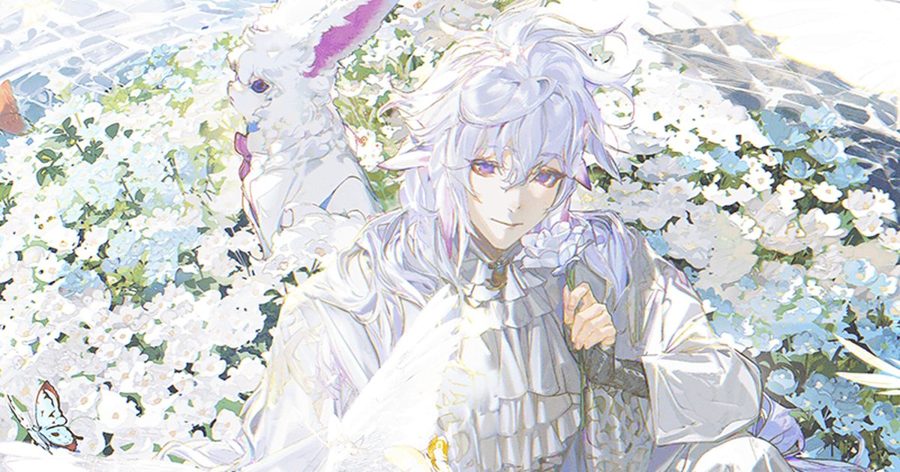

2026-11-08 · 运营深读

11 月 7 日晚，Aniplex 举行全球特别节目，宣布《Fate/Grand Order》全球累计下载量突破 1 亿次。 声优川澄绫子与开发总监狩野芳辉到场。活动自 11 月 7 日 21:00（韩国时间）全球同步开启，持续至 11 月 21 日。 纪念视觉、卡池、支援关卡，三件套全押在同一个人身上：梅林。
如果只有这些，这就是一条普通的周年式新闻。真正值得写下来的是藏在活动列表末尾的那个关卡： 一个只开放 24 小时的梅林共战——简中、繁中、日、韩、英文五个服务器， 第一次同时开、同一套数据、全球通关次数实时汇总。开始 12 小时，这个数字被揍到了 600 万次以上。
先把这个关卡的样子摆出来。敌人只有梅林一个，他全程不会攻击你。 第一回合站着让你打；第二回合送你 99 张暴击星；第三回合直接给你的全队充 100 NP。 如果一个回合没能击杀他，他还会说三句不同的台词——像是怕你打得太辛苦，先安慰两句。 首通给 10 圣晶石，之后重复通关只掉 3 星芙芙。奖励表薄得可以一眼看完。
按照当代手游的副本设计语法，这种关卡是不应该存在的：没有产出目标，没有排行， 没有首通之外的收益曲线，甚至没有难度。玩家用一个晚上能在里面刷出二十多级御主经验—— 经验成了唯一「刷得动」的产出，而这显然也不是设计目的。
但它是 FGO 运营十一年来的一个第一次：全球五个服务器，在同一个时刻，跑同一场活动。 Inven 等海外媒体在报道里特意标了一句——这是 FGO 历史上首次全球全区域同步的活动。
要理解这次联调的分量，得先知道 FGO 全球服结构的底色：日服 2015 年夏天上线， 之后各国服、各区域服陆续开服，每个服务器的版本节奏、排期、底层数据从建立起就互相独立。 日服打到哪个章节、其他服的玩家就看着攻略「预习」哪一年后的剧情——进度差是常态， 数据不互通是默认设定。让五个独立运营、独立版本、独立运维体系的游戏环境共享一个实时计数器， 是一次纯粹的跨服工程，而这次工程换来的产出，只是一个「大家一共揍了梅林多少次」的数字。
把 1 亿下载的纪念预算列一遍，你会发现最贵的那笔花在了最「没用」的地方： 跨五服联调 + 24 小时限时 + 全球计数器。 而传统纪念活动的标配——圣晶石雨——反而是最便宜的部分： 11 月 7 日登录送 1 亿 QP（零头都不到的数字游戏，但吉利），11 月 8、9 日各 30 石，10 日一个圣杯。 强化大成功率三倍、日常全开 AP 减半、Start Dash 加 30 石、回归 14 天送 30 石加双倍经验金苹果、 43 体常驻与剧情池五星自选券、21 组 UP 池（42 位限定从者 + 64 张礼装）同步开放。
这里有第二个值得玩味的细节：同一套福利，海外媒体算出来是「最高相当于 143 抽」， 国服媒体算出来是「最多 47 抽」。两个数字都对——前者把新号 Start Dash、 回归加成、QP 等价物全折算进去，后者只算一个在册老号实际能领的抽卡数。 口径差不是谁算错了，它直接暴露了这次活动的目标人群：回流玩家和新玩家，而不是在册氪金党。
梅林这个 Boss 的设计，值得单独拎出来讲。常规高难本的 Boss 是一道门槛： 机制越凶，通关的成就感越贵。而共战梅林的全部机制都朝着反方向设计—— 他给你上增益、送资源、说台词，怕你打不过他，更怕你打得没意思。 敌人第一次被做成了主持人。 这在战斗系统导向的游戏里几乎是一个语法错误，但放在一场庆典里，它是唯一正确的语法。
为什么是梅林？官方把整个 1 亿下载庆典的脸——纪念视觉、Pickup 卡池、日常支援——全给了这位花之魔术师。 这不是强度营销（梅林早已不是版本答案），是情感营销： 在 FGO 的叙事里，梅林是「在迦勒底外看着你的人」，祝福者是他的角色职能。 从千万下载时代一路到今天，官方纪念活动的仪式感几乎每次都借他的口说出。 一款 11 年的游戏在纪念自己时，选择的角色不是最强的，是在场最久的。
再把这次活动放进行业语境里。我们 10 月 29 日写过《妮姬》四周年： 259 抽福利、自选箱里塞免费可拿的角色、周年庆提前六天避开原神——那是「用福利换 DAU 与流水」的周年范本。 FGO 这次给的是 47 抽上下、没有自选箱陷阱、没有赶档期的紧迫感，预算大头花在跨服联调和一个无收益的计数器上。 两场庆典放在一起看，是两种运营哲学的分野：一种把纪念日当营销节点经营， 一种把纪念日当聚会经营。FGO 能这么做的前提是它的产品形态——回合制、剧情驱动、 没有深渊没有排位——玩家流失的成本低，回流的门槛也低，于是「回家看看」可以成为运营动作本身。
我们的观察：这场活动的所有设计选择都指向同一个判断——FGO 已经不再为「拉新氪金」做活动了。 自选券指向常驻与剧情池而非限定池（不刺激抽卡冲动）、回归加成翻倍（拉回流）、 日常全开 AP 减半（拉回归后的日活恢复），以及那个零收益的全球共战（制造话题与存在感）。 一条完整的「回流漏斗」，比任何一次 100 连都诚实。
我们的观点：这个 24 小时全球计数器，是近几年手游运营里少见的「非功利内容」样本。 当代活动本的默认语法是「投入产出可计算」：每个副本都要回答玩家刷它能得到什么。 FGO 这次反向操作：先告诉你刷它什么都得不到，再让你因为「全球一起」这四个字进去打一场。 工程预算花在了让五个互不相识的服务器抬头看同一个数字上——这不是福利，是仪式。 而仪式恰恰是 11 年老游戏最难被抄走的东西：新游戏可以砸出更厚的福利，砸不出「全球第一次」。
我们的案例对比：周年与里程碑庆典在行业里有三种做法： 妮姬式「福利换流水」（见 10/29 深读）、某二游式「周年 + 新版本 + 强卡池三合一」（把庆典变成营收节点）、 以及 FGO 式「仪式换存在感」。第三种对产品形态有硬性要求：战斗不吃数值焦虑、剧情是主要消费品、 老玩家与新玩家没有强制竞争关系。多数竞技化、排位化的二游学不了——不是不想，是结构不允许。
我们的实验：把三个可验证的预测写到 11 月 21 日活动结束后来对账： ①国服会因卡池重叠继续发布推荐召唤时间调整公告（本次已出现第一次，海外 21 组 UP 与国服排期错位是结构性的）； ②「全球同步活动」会在 FGO 未来的里程碑节点（比如下一个整数下载量）复用，成为模板而非孤例； ③24 小时限时共战关卡不会常态化——它的价值恰恰来自稀缺，若变成月度例行，仪式感即失效。 三条中第一条已在发生，后两条等对账。
我们的评分：企划独创性 8.8（史上首次五服同步 + 非功利副本设计）／ 福利厚度 6.5（47 抽口径在当代二游里属于礼貌水平）→ 综合 8.0。
1 亿下载纪念活动会开到 11 月 21 日，但它的核心事件——那场 24 小时的梅林共战—— 在 11 月 8 日晚已经落幕。600 多万次通关、一个全程不还手的 Boss、一个全球共享的计数器， 构成了 FGO 运营十一年里最「没用」也最热闹的一晚。 它真正的价值不在关卡里，在那次五服联调里：一家公司动用了五个独立服务器的运维体系， 就为了给一个玩笑做全球同步。这距离我们写它的十周年终章，才过去两个多月。在一个所有内容都要回答「产出是什么」的行业里， 造一场没有产出的聚会，反而是最稀缺的诚意。 没赶上共战的御主也不必遗憾——自选券和 21 组 UP 池还开着，回家看看这件事，不差这一个晚上。
资讯来源：Aniplex 全球特别节目（11/7）、Fate/Grand Order 官方（news.fate-go.jp「全世界1億DL突破」及 Pickup 召唤公告）、Inven Global、腾讯新闻／网易号相关报道。纪念视觉为官方 1 亿下载纪念图。